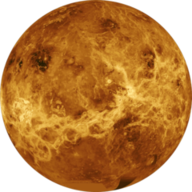

| venus | Mars | Earth | Neptune | |
|  |  |
 |
||
| Mass: | 4.87 * 1024 | 6.42 x 1023 | 5.98 x 1024 | 1.02 x 1026 |
| Diameter: | 12104(km) | 6787(km) | 12756(km) | 49528(km) |
| Mean density: | 5250(kg/m3) | 3940(kg/m3) | 5520(kg/m3) | 1640(kg/m3) |
| Escape Velocity: | 10400(m/s) | 5000(m/s) | 11200(m/s) | 23300(m/s) |
| Rotation period: | 243.02(retrograde) | 1.026 | 1(23.93 hours) | 0.67(19.1 hours) |
| Avg dist from sun: | 0.723 AU (108,208,930 km) | 1.524 AU (227,936,640 km) | 1 AU (149,597,890 km) | 30.07 AU (4,498,252,900 km) |
| Revolution period: | 224.7(days) | 686.98(days) | 365.26(days) | 60,190(164.8 Earth years) |